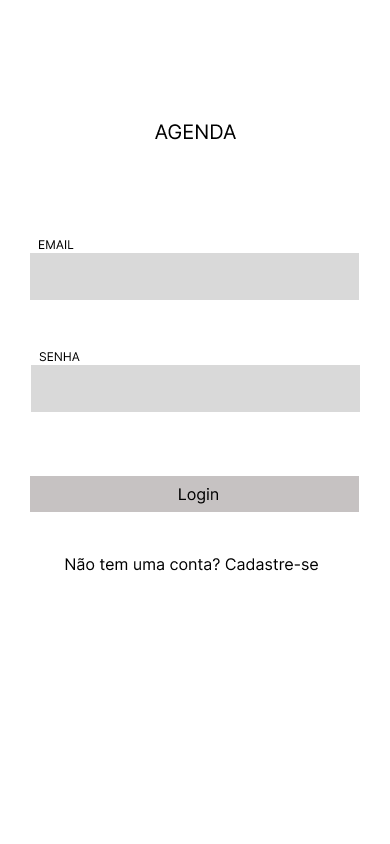

Login
O usuário poderá realizar login utilizando seu email e senha para acessar a agenda.
| Nome: | Login |
| Ator: | Usuário |
| Resumo: | Descreve a sequência de funções realizadas para fazer o login na agenda. |
| Pré-condição: | Existir cadastro |
| Pós-condição: | Acesso a agenda e as funcionalidades existentes nela. |
| Fluxo principal: | 1.abrir o aplicativo da agenda 2.fornecer os dados para o campo: nome e senha 3.clicar em entrar. |
| Fluxo alternativo: | Cliente não cadastrado, encaminhar para o cadastro. |
Fluxo de telas
Esse fluxo representa uma sequência de passos de como realizamos login no sistema de agenda. Nesse caso, iniciamos o sistema com a tela de login.
